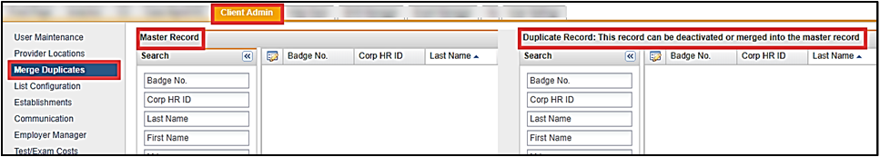
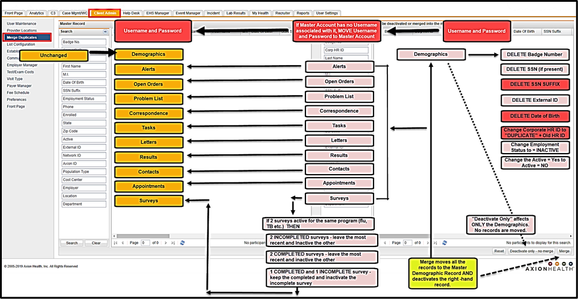

The Merge Duplicates option allows you to clean up instances where there are two accounts for the same person. You can do one of the following:
Merge and Deactivate - use the Merge Duplicate module to combine two accounts for the same person that have medical records in both accounts.
Deactivate an account if one of the two accounts has only a demographic record and no medical records present.
Only a user with Client Admin access can perform the merge function as this is a powerful tool and you can’t reverse the merge process once done.
In Client Admin > Merge Duplicates, there is a split screen window with the Master Record view on the left and the Record to Deactivate or Merge on the right.

Merge Flow Chart
The flow chart below shows where the information from the duplicate account is merged into the Master Record account.

Important points from flow chart above when you use the Merge function:
Merge Option
Master Record
Record to be Merged
Demographics
Unchanged
Data deleted or altered in specific fields:
Active – changed "No"
Badge number - blank
SSN- blank
External ID - blank
Corporate HR ID – inserts duplicate
Date of Birth - blank
Employment Status – Inactive Duplicate Record
Open Orders
Unchanged
If any charting/test form moved from the merged record is no longer needed, you will need to void them using Edit Appointments
Any charting/test form(s) present will be moved to the Master Record
Surveys
If two surveys are active for the same program –
2 incomplete surveys – the most current will display and the other will be inactivated
2 completed surveys – the most current will display and the other will be inactivated
1 completed and 1 incomplete survey – the complete survey will display and the incomplete survey will be inactivated
Any survey(s) present will be moved to the Master Record
Deactivate Only Option
Unchanged
There are no medical records to move to the Master Record; only the Demographic Record is changed.